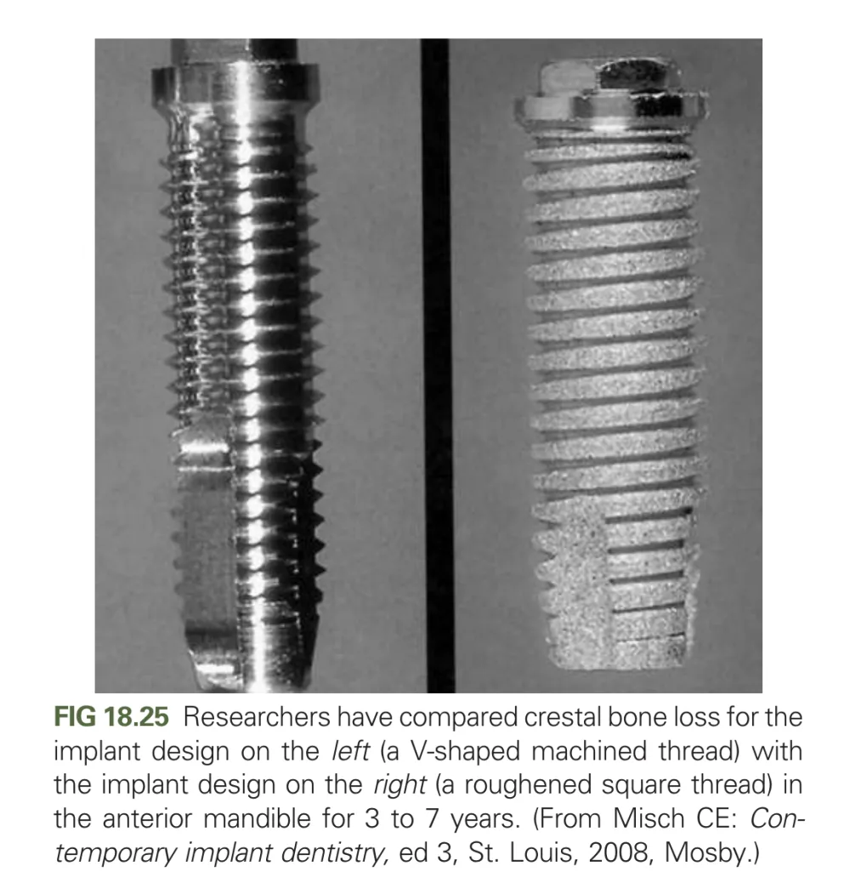
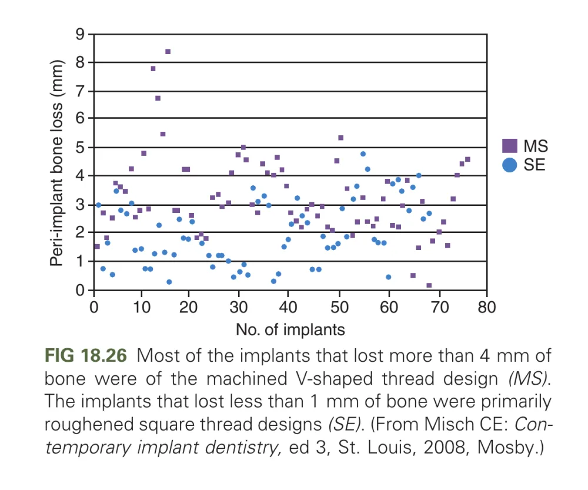

نسخه استخراجشده؛ ترجمه یا تأیید علمی انجام نشده است. وضعیت: captured
اول این اصل: «استخوان مارجینال پیرامون ناحیهی کرستال ایمپلنت معمولاً شاخص چشمگیری از سلامت ایمپلنت است. برخلاف دندانهای طبیعی، علل تحلیل استخوان کرستال پیرامون ایمپلنت چندعاملیاند و ممکن است در دورههای زمانی متفاوتی رخ دهند.»
پنج نوع، به ترتیب زمانی:
و جملهی کلیدی: «هر دورهی زمانی ممکن است علت متفاوتی برای تحلیل استخوان داشته باشد.» یعنی وقتی روی رادیوگرافی تحلیل میبینی، نخستین پرسش «چقدر؟» نیست — «کِی؟» است. همان دو میلیمتر در ماه اول و در سال پنجم، دو بیماری متفاوتاند.
و تقسیم متغیرها به سه دسته، که از نظر مسئولیت بالینی مهم است:
و یک هشدار زمانی: «پس از تحویل پروتز نهایی، بسیاری از رویدادهای مسئول تحلیل استخوان مارجینال پیشتر رخ دادهاند، در حالی که دیگرانی مانند اورلود اکلوزالی و رابطهاش با کیفیت استخوان ادامه دارند.»
یعنی وقتی پروتز را تحویل میدهی، بخشی از تحلیل آینده از پیش قفل شده است. تنها اهرمی که هنوز در دستت است، اکلوژن است — و دقیقاً به همین دلیل بود که یونیتهای ۱۷ تا ۱۹ اینهمه روی توزیع نیرو تأکید داشتند.
و شاهدی از ارتوپدی: لوزنینگ آسپتیک ناشی از استئولیز رابط استخوان-ایمپلنت، علت اصلی شکست دیرهنگام تعویض مفصل است (۱۰ درصد ظرف ۱۰ سال) و «عوامل بارگذاری مکانیکی عمدتاً با این وضعیت مرتبطاند».
در آنجا آلیاژ تیتانیوم است، رابط بسیار شبیه ایمپلنت دندانی است، و آلودگی باکتریایی دهانی و میکروگپ اصلاً وجود ندارند. درمان آن در بیمار بیعلامت با نقص استئولیتیک بزرگ ولی بدون لقی پروتز، کورتاژ ممبران استئولیتیک و گرافت استخوان است.
این استدلال مهمی است: در محیطی کاملاً آسپتیک، بار مکانیکی میتواند استخوان را در رابط تحلیل ببرد. پس تحلیل استخوان پیرامون ایمپلنت میتواند بدون باکتری هم رخ دهد — این شواهد رابطهی تحلیل با تنش بیومکانیکی را پشتیبانی میکنند.

حالا دادههای عددی، که در شکل ۱۸٫۲۶ خلاصه شدهاند. دو طراحی ایمپلنت با کرستماژول و اتصال هگز خارجی مشابه، بهصورت چهار ایمپلنت میان دو سوراخ چانهای در مندیبل، در پیگیری چندساله:
و دو عدد که تفاوت را به دو انتهای طیف میبرند: «بیستودو ایمپلنت V-رزوه بیش از ۴ میلیمتر استخوان از دست دادند»، در حالی که «کمتر از ۱ میلیمتر تحلیل برای ۱۶ ایمپلنت مربعیرزوهی سطحزبر در مقابل تنها دو ایمپلنت V-رزوهی ماشینکاریشده گزارش شد».
به دامنه دقت کن، نه فقط به میانگین. ۲٫۴ در برابر ۱٫۶ تفاوت چشمگیری به نظر نمیرسد. اما ۸٫۵ در برابر ۴٫۸ یعنی بدترین حالتِ طراحی ضعیف، نزدیک دو برابر بدترین حالت طراحی بهتر است. میانگینها تفاوت را پنهان میکنند.
و نکتهی حیاتی: «هیچ یافتهی بالینی از التهاب یا اگزودا وجود نداشت.»
این جمله استدلال را کامل میکند: ایمپلنتهایی که ۸ میلیمتر استخوان از دست دادند، ملتهب نبودند. پس تحلیل، عفونی نبوده است.
و نتیجه: «دامنهی تحلیل استخوان با شرایط سطحی و طراحیهای مختلف ایمپلنت نشان میدهد که چیزی بیش از عرض بیولوژیک، موقعیت میکروگپ، و یا علل جراحی در فرایند تحلیل استخوان مارجینال دخیل است.»
سه عامل محتملترین:
«هر سهی این شرایط، اورلود اکلوزالی را بهعنوان علت تحلیل استخوان مارجینال پیرامون ایمپلنت متهم میکنند.»
و دادههای یک مطالعهی آیندهنگر دهساله روی سه طراحی از یک تولیدکننده:
و جمعبندی: «چون طراحی و شرایط سطحی ایمپلنت بر مقدار تنش منتقلشده به استخوان اثر میگذارند، یکی از دلایل مقدار متفاوت تحلیل استخوان برای طراحیهای مختلف ممکن است به تنش منتقلشده به استخوان مربوط باشد.» یعنی طراحی رزوه، یک متغیر بیومکانیکی است، نه یک ترجیح تجاری.
و یک محدودیت رادیوگرافیک که باید بدانی: «رادیوگرافی تنها سطوح مزیال و دیستال استخوان کرستال را بهروشنی نشان میدهد. اما تحلیل استخوان زودهنگام اغلب در سمت فاسیال ایمپلنت رخ میدهد.» و «نبود رادیولوسنسی پیرامون ایمپلنت به معنای وجود استخوان در رابط نیست» — در مندیبل قدامی بهخاطر کورتیکال متراکم، تا ۴۰ درصد کاهش تراکم لازم است تا تفاوت رادیوگرافیک سنتی پدید آید.
